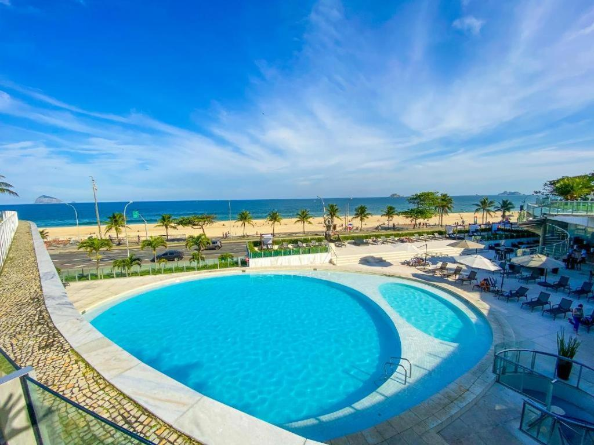

Brasil: Rio de Janeiro
Alojamiento
Lo primero a la hora de plantearse dónde alojarse en Río de Janeiro es el tipo de alojamiento que vamos a escoger. La bien llamada “Cidade Maravilhosa”, es una urbe cosmopolita y en constante proceso de crecimiento, en la que se puede encontrar toda la variedad de alojamientos que se precisen. Desde habitaciones en casas particulares tipo Bed & Breakfast, hasta lujosos hoteles de cinco estrellas, pasando por pequeños y encantadores hoteles boutique, hoteles de categoría media, económicos hostales y albergues juveniles.
Por otro lado, en los últimos años ha aumentado con gran fuerza la oferta de apartamentos en Río de Janeiro, que permiten una estadía más independiente y ofrecen todo lo que el viajero pueda necesitar para sentirse como en su casa. Esta alternativa es muy útil sobre todo cuando se trata de estadías prolongadas o se viaja en familia, especialmente con niños, ya que los precios resultan más convenientes y se tienen todas las comodidades.
Donde dormir en rio de Janeiro... Ver mas aqui!
